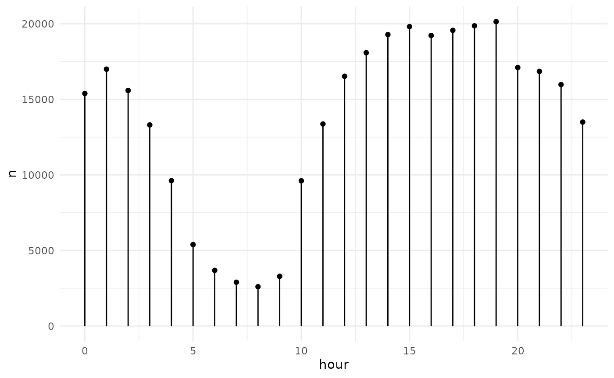

Trelliscope can be very useful for visualizing large datasets. Often when visualizing large data, we are constrained to either calculate and visualize summaries or to take a more in-depth look at a small sample of the data. These are both useful but insights can easily be lost in summaries or by not looking in the right places. Trelliscope provides a convenient fast way to interactively explore large datasets in detail.
In this article we will show a quick example of creating a Trelliscope display against NYC Taxi data, conveniently made available by the Apache Arrow project.
First we’ll load some dependencies.
library(arrow, warn.conflicts = FALSE)
library(dplyr, warn.conflicts = FALSE)
library(lubridate, warn.conflicts = FALSE)
library(ggplot2)
library(trelliscope)If you’d like to download the data locally, you can use the following:
bucket <- s3_bucket("voltrondata-labs-datasets/nyc-taxi")
# this will take a very long time!
copy_files(from = bucket, to = "nyc-taxi")
list.files("nyc-taxi")
#> [1] "year=2009" "year=2010" "year=2011" "year=2012" "year=2013" "year=2014"
#> [7] "year=2015" "year=2016" "year=2017" "year=2018" "year=2019" "year=2020"
#> [13] "year=2021" "year=2022"The data is partitioned by year and month and runs from 2009 to 2020.
system("du -hs nyc-taxi")
#> 64G nyc-taxiIt is 64 GB in size. We will open and work with this data using the arrow R package.
ds <- open_dataset("nyc-taxi") %>%
mutate(
day = day(pickup_datetime),
hour = hour(pickup_datetime)
)
nrow(ds)
#> [1] 1,672,590,319There are over 1.6 billion rows in this dataset.
For the sake of a very simple example, suppose that we wish to create a visualization for each day in the dataset showing the number of rides in each hour of the day. There are many other interesting things we could do with this data, but this will suffice for an illustration of the process.
First we want a dataset that represents each day of the data. Below is a simple summary computing the number of rides per day.
dsumm <- ds %>%
group_by(year, month, day) %>%
summarise(n = n()) %>%
collect() %>%
ungroup() %>%
mutate(
date = make_date(year, month, day),
wday = wday(date, label = TRUE)
) %>%
arrange(date)This could be a lot more interesting with more summaries such as the median fare and distance per day, but we will keep it simple for this example.
dsumm
#> # A tibble: 4,807 × 6
#> year month day n date wday
#> <int> <int> <int> <int> <date> <ord>
#> 1 2009 1 1 327625 2009-01-01 Thu
#> 2 2009 1 2 376708 2009-01-02 Fri
#> 3 2009 1 3 432710 2009-01-03 Sat
#> 4 2009 1 4 367525 2009-01-04 Sun
#> 5 2009 1 5 370901 2009-01-05 Mon
#> 6 2009 1 6 427394 2009-01-06 Tue
#> 7 2009 1 7 371043 2009-01-07 Wed
#> 8 2009 1 8 477502 2009-01-08 Thu
#> 9 2009 1 9 520846 2009-01-09 Fri
#> 10 2009 1 10 483350 2009-01-10 Sat
#> # ℹ 4,797 more rowsThis will serve as the summary dataset that we will turn in to a Trelliscope data frame. With this, we create visualizations of data for each day and add them as a column to the data frame.
As discussed in the Creating Panel Columns
article, create a plot function that returns a plot of the data for any
given day, as defined by the year, month, and
day variables that are found in dsumm. Let’s
first build up what this plot function needs to do with the data for a
single day.
x <- filter(ds, year == 2009, month == 1, day == 1)
pd <- x %>%
count(hour) %>%
collect() %>%
arrange(hour)Our data to plot looks like this:
pd
#> # A tibble: 24 × 2
#> hour n
#> <int> <int>
#> 1 0 15386
#> 2 1 16990
#> 3 2 15585
#> 4 3 13307
#> 5 4 9619
#> 6 5 5391
#> 7 6 3682
#> 8 7 2899
#> 9 8 2602
#> 10 9 3289
#> # ℹ 14 more rowsA simple plot with ggplot2:
ggplot(pd, aes(hour, n)) +
geom_point() +
geom_segment(aes(xend = hour, yend = 0)) +
xlim(0, 23) +
theme_minimal()
We now put this together into a plot function that we can use to create a panel column.
plot_fn <- function(year, month, day) {
pd <- filter(ds, year == {{ year }}, month == {{ month }}, day == {{ day }}) %>%
count(hour) %>%
collect()
ggplot(pd, aes(hour, n)) +
geom_point() +
geom_segment(aes(xend = hour, yend = 0)) +
xlim(0, 23) +
theme_minimal()
}Now we can add a plot column, hourly_ct, to our summary
dataset with the plot function we defined above.
dsumm <- dsumm %>%
mutate(hourly_ct = panel_lazy(plot_fn))
dsumm
#> # A tibble: 4,807 × 7
#> year month day n date wday hourly_ct
#> <int> <int> <int> <int> <date> <ord> <lazy_panels>
#> 1 2009 1 1 327625 2009-01-01 Thu <ggplot>
#> 2 2009 1 2 376708 2009-01-02 Fri <ggplot>
#> 3 2009 1 3 432710 2009-01-03 Sat <ggplot>
#> 4 2009 1 4 367525 2009-01-04 Sun <ggplot>
#> 5 2009 1 5 370901 2009-01-05 Mon <ggplot>
#> 6 2009 1 6 427394 2009-01-06 Tue <ggplot>
#> 7 2009 1 7 371043 2009-01-07 Wed <ggplot>
#> 8 2009 1 8 477502 2009-01-08 Thu <ggplot>
#> 9 2009 1 9 520846 2009-01-09 Fri <ggplot>
#> 10 2009 1 10 483350 2009-01-10 Sat <ggplot>
#> # ℹ 4,797 more rows
#> # ℹ Use `print(n = ...)` to see more rowsFinally, we can create a Trelliscope display from this data frame.
dsumm <- dsumm %>%
as_trelliscope_df(name = "NYC Taxi") %>%
set_default_labels(c("date", "n", "wday")) %>%
set_default_sort("date") %>%
set_default_layout(ncol = 4)So far, there is not much about this example that is any different from other examples in these articles. If we were to view our Trelliscope display right now, it would cycle through all of the data to pre-render the panels. This could take a while because of the number of panels and because of the size of the underlying dataset.
Trelliscope has an experimental option to disable pre-rendering of panels. This will allow us to view the display immediately, but will cause panels to be rendered on-demand as we view them, using your local R session to do so. We can set this with the following:
dsumm <- dsumm |>
set_panel_options(hourly_ct = panel_options(prerender = FALSE))Now when we view the display, we should see something like this:
view_trelliscope(dsumm)Disabling pre-rendering is a great feature for getting to an output quickly, regardless of the size of the underlying data, but it can have drawbacks. First, it can be slow to render panels on-demand, especially if the panel function is computationally expensive. Panels are cached, so this will only be a problem the first time you view a panel. Note that particularly in our case, since we are dealing with an Arrow dataset, we are at the mercy of how quickly the data can be filtered. Since here the partitioning of the data is on year and month, the filtering is very fast. Second, you currently cannot share Trelliscope displays that have panels that are not pre-rendered. This is because the panels are rendered using your local R session which causes the resulting app to lose its serverless self-contained properties.